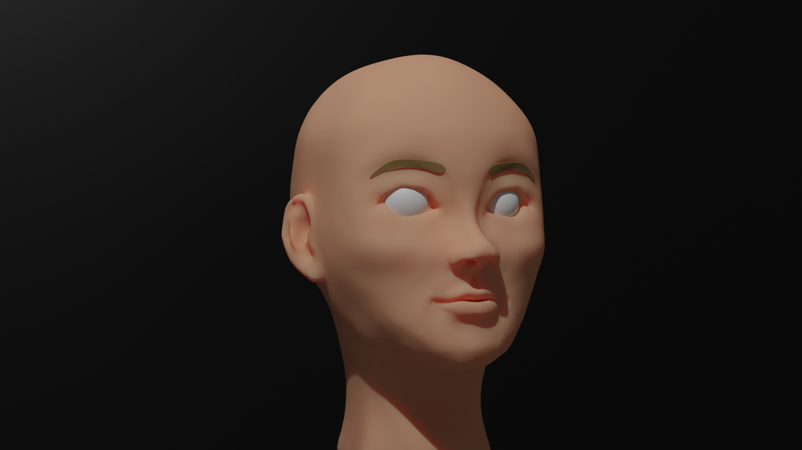
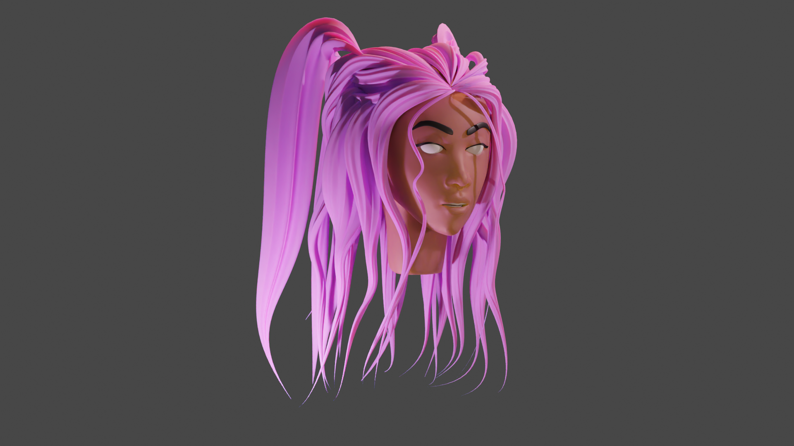
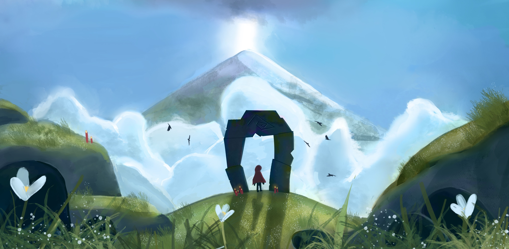
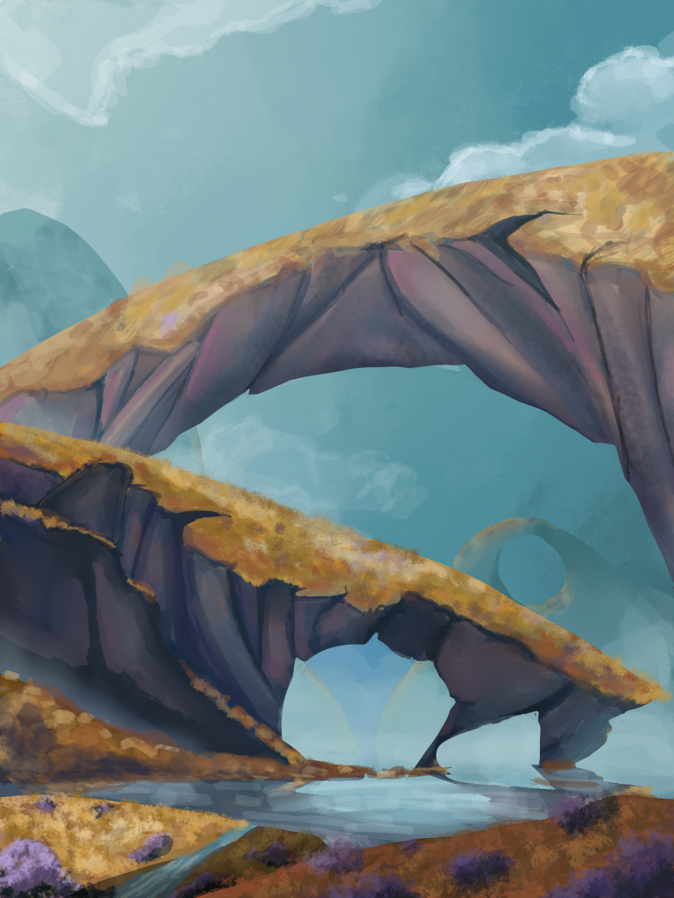
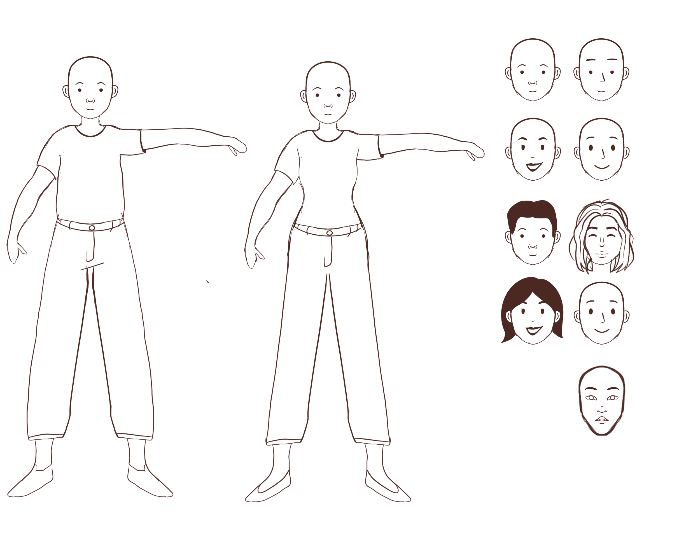

Leerdoel 1
Sculpturen maken in Blender
Het eerste blok van de minor heb ik besteed aan sculpturen maken in Blender. Blender is een programma waar je 3D modellen kan maken. Het is een groot programma waar je veel verschillende dingen in kan doen en waar ik nog geen ervaring mee had. Ik heb gefocust op het sculpten. Ik kan dit het beste vergelijken met sculpturen maken met klei, maar dan digitaal. Hierbij gaat het puur om de vorm van het sculptuur en niet zo zeer licht, textuur en compositie.
Ik wilde de sculpturen binnen een bepaald thema houden zodat ze goed te vergelijken zijn. Ik heb sculpturen gemaakt van portretten. Ik teken vaak portretten dus ik heb een goed idee van hoe een hoofd in elkaar zit en er kwamen verschillende technieken aan bod in Blender om deze hoofden te maken. Ik heb geëxperimenteerd met verschillende gezichten en haartypes. Ik heb veel geleerd van deze 5 weken. Ik heb nu een beter idee hoe het programma in elkaar zit en sculpten gaat steeds sneller en makkelijker. Ook heb ik nog veel geleerd over hoe het menselijke gezicht in elkaar zit.
 Leerdoel 2
Concept Art
Mijn leerdoel voor het tweede blok was het maken van concept art. Concept art is een vorm van illustratie die gebruikt wordt om een idee over te brengen, voor bijvoorbeeld films, games en animaties. Ik kijk al lang op naar dit soort kunst en wilde dus zelf de basis gaan leren. Ook concept art is erg breed. Je hebt characters, voertuigen, omgevingen en nog veel meer. Ik ben de focus gaan leggen op omgevingen, natuur omgevingen. Dit was namelijk geheel nieuw voor mij.
Ik heb een nieuwe manier van schetsen gebruikt, die richt op vormen in plaats van lijnen. Ik heb veel geleerd over vormen, values (in kleur), details en texturen. Ik was steeds meer tevreden met de illustraties die ik creëerde in dit blok en ik merkte dat ik sneller werd in het illustreren ervan.
 Leerdoel 3
Concept Art
Na blok 2 vond ik dat ik nog veel te leren had over concept art dus ik ben daar mee verder gegaan. Nu lag de focus op stedelijke landschappen in plaats van natuurlijke omgevingen. Hierbij komen net wat andere technieken bij kijken. Ik heb gewerkt met lijnwerk om de strakke vormen er goed eruit te laten komen. Daarnaast is perspectief erg belangrijk bij gebouwen. Ik heb tijdens dit blok daarom veel tijd besteed aan verschillende perspectieven.
Om een nieuw hulpmiddel erbij te betrekken ben ik weer terug gegaan naar blender. Om een interessanter perspectief
te krijgen en moeilijker vormen te kunnen gebruiken, had ik bedacht om een basis te maken in blender en die te
gebruiken voor mijn illustraties. Hierbij had ik minder aan mijn kennis in sculpten, dus heb ik vooral vormen
gemaakt in ‘modelling’ om het gewenste resultaat te krijgen.
Ik heb in dit blok veel geleerd over perspectief, lijnwerk, vormen en 3D modellen als hulpmiddel.

Leerdoel 4
Characters maken in Illustrator
Tijdens het groepsproject was ik verantwoordelijk voor de characters. Op de portfolio site staat per persoon een character, die ieder lid van onze groep representeert. Dit was in een vector stijl, waar ik weinig ervaring mee heb. Ik heb de stijl voor de characters ontwikkeld en 5 verschillende characters gemaakt, die allemaal uniek zijn en eigenschappen bevatten van de persoon die ze representeren.
Daarnaast werden deze characters zowel stil als een animatie gebruikt. Dus ik moest rekening houden met dat ze allemaal in een pose stonden, die uniek is en simpel genoeg zodat het een leuke animatie kan bevatten. Ik heb vooral veel geleerd over poses, daar heb ik veel dingen bij uitgeprobeerd. Ik heb ook veel geëxperimenteerd met hoe je een character op iemand kan laten lijken.
